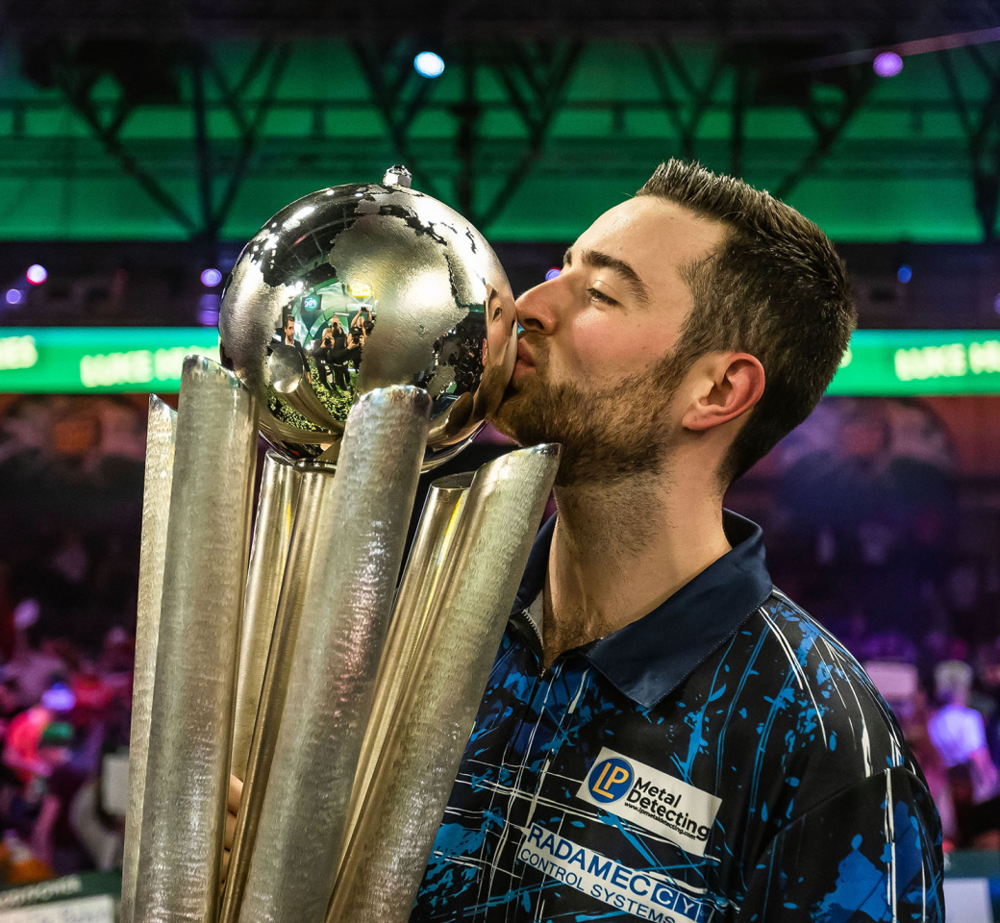

| Luke Humphries |
|---|
| Nickname | Cool Hand Luke |
| Home Town | Crewe |
| Walk-on song | I Predict A Riot - Kaiser Chiefs |
| Darts Used | Red Dragon 22g |
| Rank | 1 |
| Televised titles | 10 |
| Non-Televised PDC titles | 11 |
| Televised Nine-Dart Finishes | 0 |
World number one Luke has enjoyed a sensational rise to prominence since winning his first TV title at the 2023 World Grand Prix, following up with Grand Slam of Darts and Players Championship Finals success before a famous victory at Alexandra Palace in January 2024.